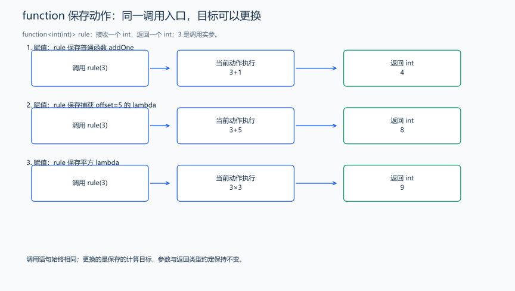
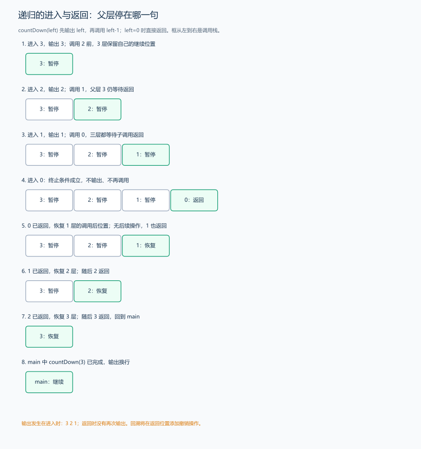

（十六） std::function：保存、传递和更换计算动作
1. 从“保存数据”到“保存要执行的动作”
STL 已能保存数和记录。如果希望先选择“加一”或“加上偏移量”，之后再统一调用一个名字执行它，能不能把计算动作也保存起来？普通函数与 lambda 都能被调用，std::function 用一个约定的调用形式接住它们。
题目原文（自拟）： 程序无需输入。先令规则为“加一”，作用于 3；再换成捕获偏移量 5 的“加上偏移量”，作用于 3；最后换成“平方”，作用于 3。每次输出结果。
#include <functional>
#include <iostream>
using namespace std;
int addOne(int x) {
return x + 1;
} // 一个普通函数。
int main() {
function<int(int)> rule = addOne; // 接收一个 int，返回一个 int。
cout << rule(3) << '\n';
int offset = 5;
rule = [offset](int x) { return x + offset; }; // 改存带捕获的 lambda。
cout << rule(3) << '\n';
rule = [](int x) { return x * x; }; // 再次更换规则，调用形式仍相同。
cout << rule(3) << '\n';
}输出：
4
8
9
<functional> 提供 function。function<int(int)> 的外层是模板；尖括号里的 int(int) 是函数类型：前一个 int 是返回类型，括号里的 int 是参数类型。不是两个整数值，更不是把输入 3 写在类型里。rule(3) 才是实际调用。
| 写法 | 调用约定 | 例子 |
|---|---|---|
function<int(int)> |
一个 int 参数，返回 int | 整数变换 |
function<bool(int,int)> |
两个 int 参数，返回 bool | 判断两个数的关系 |
function<double(double)> |
一个 double 参数，返回 double | 后面二分求根使用的函数 f |
function<void(int)> |
一个 int 参数，不返回结果值 | 输出动作、搜索中的调用 |
不同 lambda 表达式具有不同的类型，auto 变量由初始化时的表达式确定类型；std::function 则把能按指定形式调用的目标包装成同一个类型，因此可以更换保存的动作。包装后仍按签名传入参数、接收返回值，这种统一调用接口的方式也称为类型擦除。
2. 把动作作为参数传给另一段处理过程
题目原文（自拟）： 程序无需输入。数组为 1、2、3，分别按“乘 2”和“加 10”的规则转换并输出，每个规则的结果占一行，以空格分隔。
#include <functional>
#include <iostream>
#include <vector>
using namespace std;
void printTransformed(const vector<int> &values, const function<int(int)> &rule) {
for (int i = 0; i < static_cast<int>(values.size()); ++i) {
if (i > 0)
cout << ' ';
cout << rule(values[i]); // 过程不决定公式，只负责把每项交给规则。
}
cout << '\n';
}
int main() {
vector<int> values{1, 2, 3};
printTransformed(values, [](int x) { return x * 2; }); // 传入第一个动作。
printTransformed(values, [](int x) { return x + 10; }); // 数据相同，动作不同。
}输出为 2 4 6、11 12 13，各占一行。只读引用避免在 printTransformed 的参数处再复制已有容器与函数对象；这里传入的临时 function 在整个调用期间有效。容器的遍历和计算规则分别负责自己的部分，后面的求根代码就会把 f 作为这样的参数。
3. 空目标与已保存的动作
std::function<int(int)> rule; // 默认构造时为空，没有目标可以执行。
if (rule) { // 转成逻辑判断：检查是否已保存一个可调用目标。
rule(3); // 只有存在目标时才调用；本片段需 <functional>。
}直接调用空 function 会抛出 std::bad_function_call，不是默认返回 0。改用 rule=nullptr 可以清空目标。保存引用捕获的 lambda 时，function 也不会延长它所引用变量的生命周期。
4. 递归 lambda：先准备名字，再让动作调用这个名字
题目原文（自拟）： 程序无需输入。从 3 开始依次输出 3、2、1，到 0 时停止；用一个能够调用自己的 lambda 完成，元素之间一个空格。
推导： 输出当前剩余数 left 后，下一个动作与当前完全相同，只是参数变成 left-1；left=0 时直接返回，不再调用。先声明 countDown，再给它赋值，lambda 才能引用一个已声明的名字。
#include <functional>
#include <iostream>
using namespace std;
int main() {
function<void(int)> countDown; // 先声明用于调用的名字。
countDown = [&countDown](int left) {
if (left == 0)
return; // 这一支结束递归，不再调用下一层。
cout << left;
if (left > 1)
cout << ' ';
countDown(left - 1); // 调用同一动作，参数逐次减小。
};
countDown(3);
cout << '\n';
}
输出 3 2 1。先进入 3，再进入 2、1、0；0 返回后，依次回到 1、2、3 的调用现场，每层从调用后的语句继续执行。本例之后没有其他操作，所以直接继续返回。搜索章节会在这个基础上加入选择、回溯和记忆化，并画出返回后还要做什么。
std::function 把不同的可调用对象包装成同一个调用接口。包装可能分配存储，调用还会经过包装层，所以计算费用时既要计入包装与调用，也要计入目标函数本身的工作。固定动作可以直接使用普通函数或 auto lambda；把动作作为参数传递、保存或替换时，function 提供统一的类型。C++17 的 function 会保存可复制的目标，例如前面按值捕获整数的 lambda 可以随包装一起复制。相关接口见 C++17 草案：function。
现在能够把数据组成容器，也能把动作传给处理过程。下一部分用自定义类把相关的数据、约束和操作放到一起，先从学生记录这样的具体需求开始。